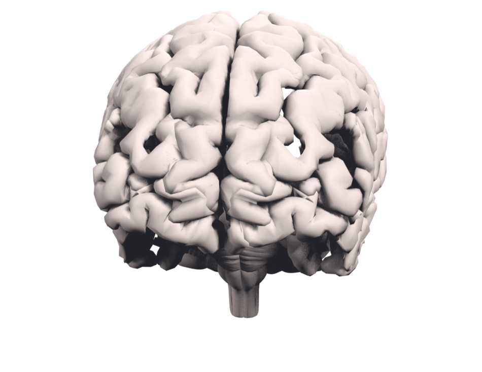

The Lab
Explore the brain
Spin it, zoom in, and click a region to see what it does, in clear language. Slide it apart to see the deep structures, turn on x-ray to see straight through the cortex, or damage any region to see the condition it causes and then repair it.
Loading the brain…

Your browser could not start 3D graphics. You can still read about each region using the buttons above.
Drag to rotate · scroll to zoom · click a region
3D model: Z-Anatomy (Gauthier Kervyn) & BodyParts3D / DBCLS, licensed CC BY-SA 4.0. Descriptions written and sourced by The Neuroscience Review.